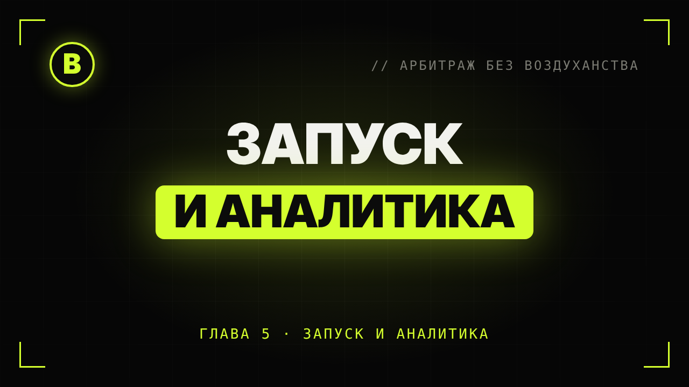
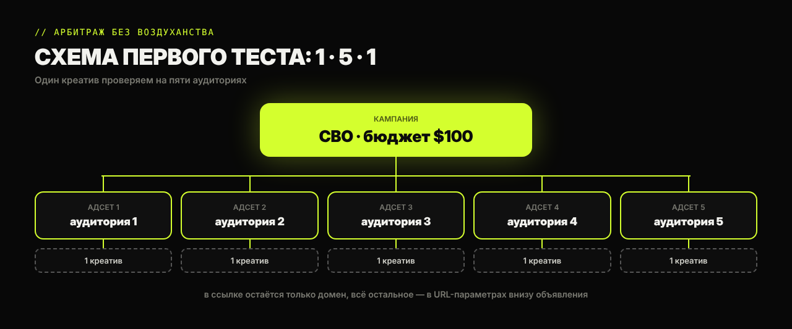
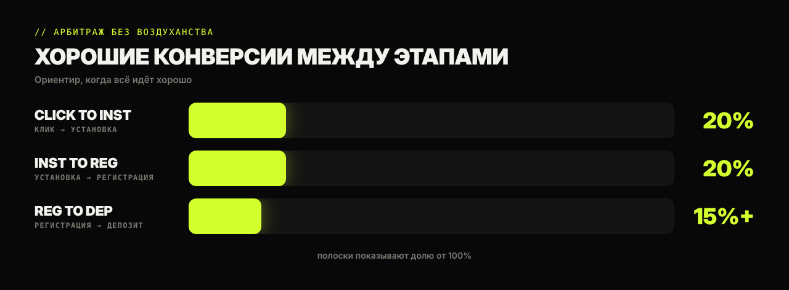
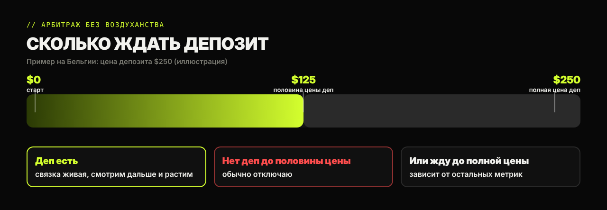
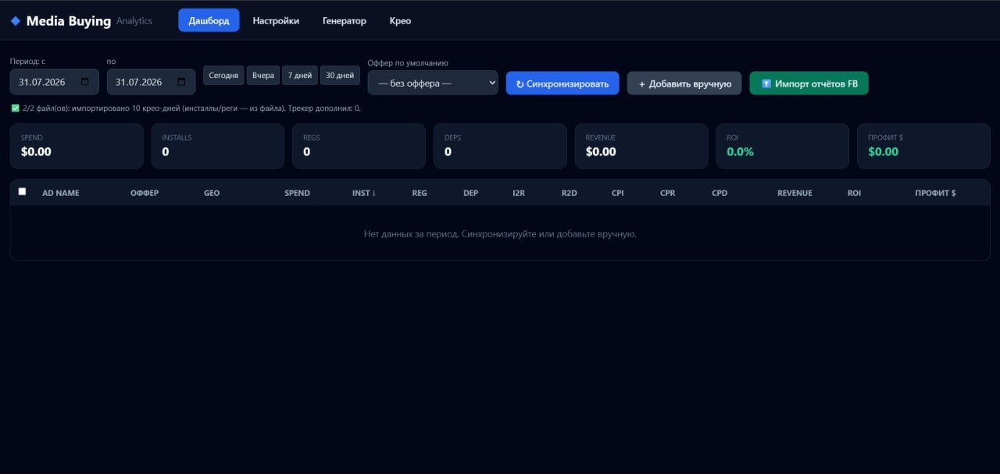

Запуск и аналитика

Первый запуск
Моя схема запуска на тест креатива такая: один креатив, пять адсетов (в каждом по одному объявлению), бюджет CBO $100. Коротко это называют схемой 1-5-1: одна кампания, пять адсетов, одно объявление в каждом.

Ссылку в объявлении я скрываю: оставляю только домен, а всё, что идёт после домена, ставлю в URL-параметры в самом низу настроек объявления в Facebook.
Если термины незнакомы
CBO — бюджет на уровне кампании: Facebook сам распределяет его между адсетами. Адсет — группа объявлений с одной аудиторией и настройками. URL-параметры — метки, которые передают в трекер данные о клике.
Что смотреть в первые часы
В первые часы смотри, идут ли вообще клики: кликают ли на твою рекламу.
Я работал так: крутил до цены инсталла. Если инсталла нет, просто отключал кампанию или креатив. Всё зависит от схемы запуска.
Но поначалу советую смотреть на цену клика, а потом уже формировать свой подход. Бывает, что click to inst, например, 50% и инсталл хороший, а клик дорогой. Или наоборот: депозит нормальный, а регистрация дорогая.
Метрики
Для меня в первую очередь важны CPC (цена клика) и CPR (цена регистрации). На EPC я смотрел не так уж много.
В идеале конверсии между этапами такие: click to inst 20%, inst to reg 20% и reg to dep хотя бы 15%. Это уже хороший показатель.

Когда выключать
Поначалу я выключал только тогда, когда цена клика не сходится.
Когда оставлять
Оставляй, когда видишь хорошие метрики. Например: цена клика $5, цена инсталла $20, цена регистрации $50–100. Дальше нужно ждать цены депозита.
Обычно я жду до половины цены депозита. Если депозита нет, отключаю, либо жду до полной цены депозита. Всё зависит от остальных метрик.

Как масштабировать
Раньше хорошо работал резкий ап бюджета, но и тут всё зависит от «настроения» Facebook. Иногда работает плавное повышение, а иногда резкое.
Ещё один способ: дубль кампании на разные аккаунты. Или масштабировать саму схему запуска, например с 1-5-1 до 1-10-1.
Работа с банами и реджектами
Здесь у каждого свой подход. Если объявление зареджектили, можно попробовать перезапустить его или подать апелляцию. Тогда всё может пройти нормально, и креатив пройдёт апелляцию.
Как вести учёт
Обычно это таблица. Лучше всего, по моему опыту, самописная CRM: у меня была своя, и она оказалась удобнее таблицы.

Новые главы выходят в канале. Подпишись, чтобы не пропустить.
Подписаться на «Воздухан»